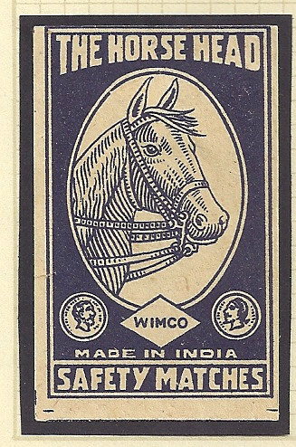
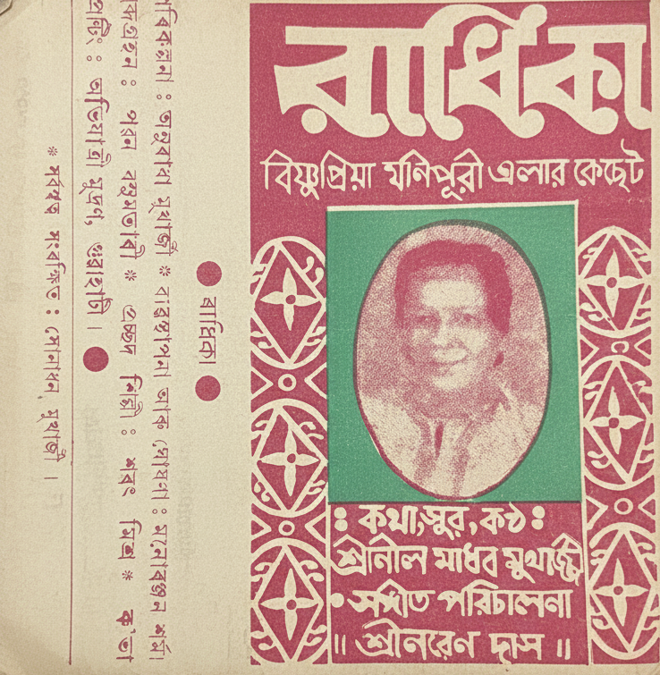
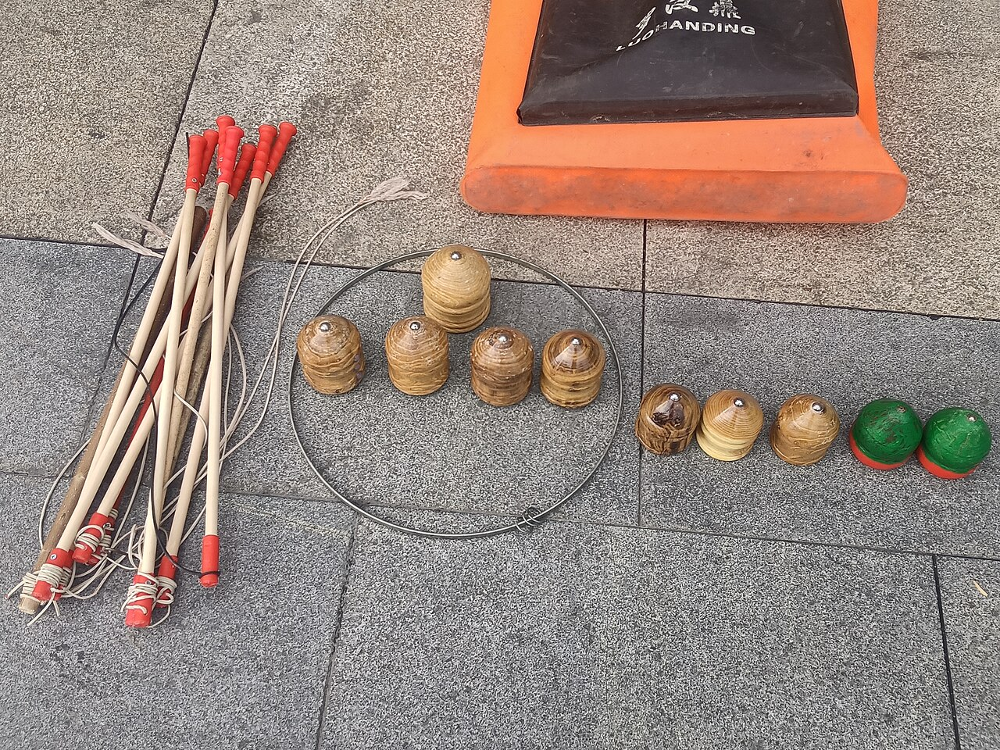
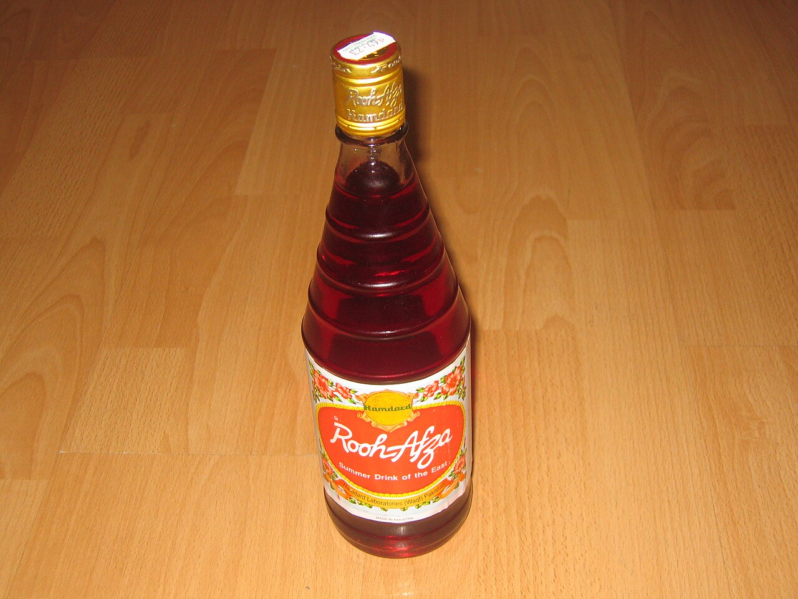
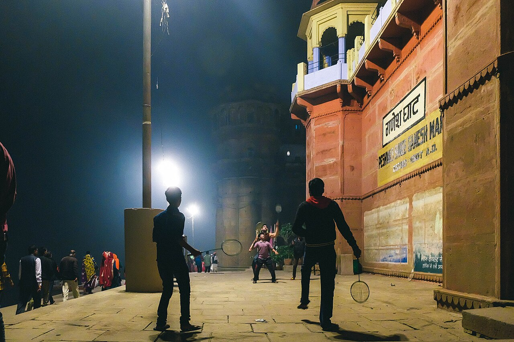
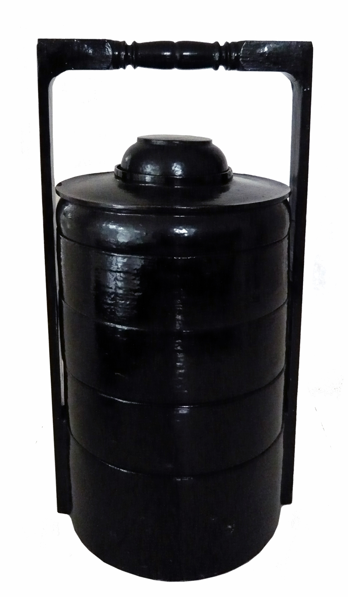
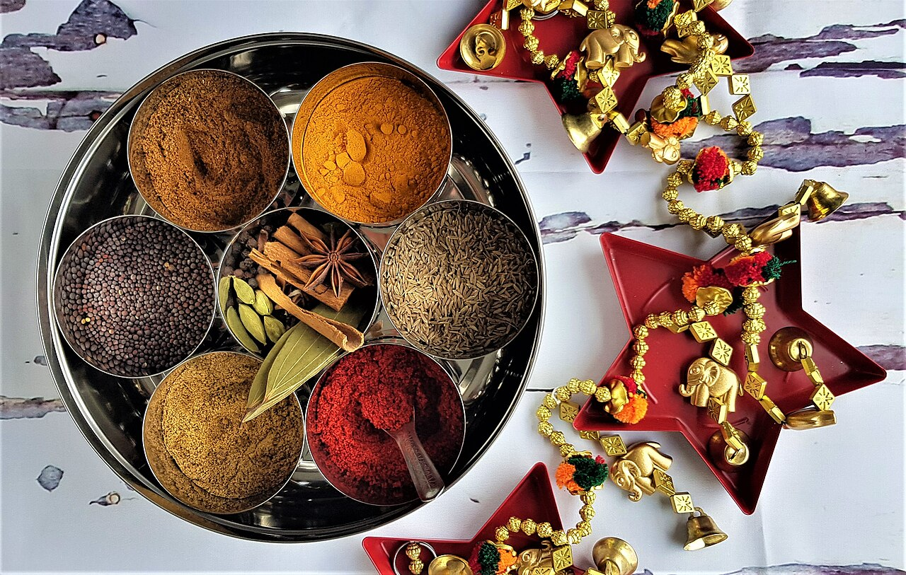

India
The gully and the kitchen shelf.
First look

India · Matchbox labels Ship-style matchbox labels 1929 and circa 1940s Printed Indian matchbox labels. Not a box on a table. India · Pichkari
Holi syringe
late 18th–mid-19th c.
A silver pichkari in a museum, not a plastic gun.
India · Pichkari
Holi syringe
late 18th–mid-19th c.
A silver pichkari in a museum, not a plastic gun.

India · Cassette Radhika cassette 1985 on the file A songs cassette inlay. No pencil in the picture.
India · Wooden top Wooden top and whip not dated Closest top we could license. Country not stated.
India · Rooh Afza Rooh Afza bottle the bottle in the photo The syrup bottle, label left as printed. India · Bottle caps
Crown caps
not dated
The caps themselves. The file does not show a game.
India · Bottle caps
Crown caps
not dated
The caps themselves. The file does not show a game.
Not pictured: a tape ball with a brick wicket. No free photo of that object. Bottle caps sit in the open first-look place and are labeled as caps.
Also on this shelf

India · Net games Badminton at the ghat not dated A net game in Varanasi, not a racket ad. India · Old ads
Enamel sign and a 1947 ad
1930s–40s and 1947
A porcelain sign and a print ad. Not film posters.
India · Old ads
Enamel sign and a 1947 ad
1930s–40s and 1947
A porcelain sign and a print ad. Not film posters.
 India · Parle-G
Parle-G biscuits
not dated
The biscuit, as packaged in the photo.
India · Parle-G
Parle-G biscuits
not dated
The biscuit, as packaged in the photo.
 India · Frooti
Frooti in a shop
not dated
A shop display in India, not a drawn logo.
India · Frooti
Frooti in a shop
not dated
A shop display in India, not a drawn logo.

India · Tiffin Lacquer tiffin carrier not dated A stacked carrier. Not identified as Indian steel.
India · Steel box Masala dabba not dated A stainless spice box, not a lunch tiffin. India · Unlit sparkler
Unlit sparkler
the photo is 2022
Unlit. The photo was taken in Virginia.
India · Unlit sparkler
Unlit sparkler
the photo is 2022
Unlit. The photo was taken in Virginia.
 India · Hopscotch
Hopscotch with a rock
not dated
Chalk and a rock. The file does not say India.
India · Hopscotch
Hopscotch with a rock
not dated
Chalk and a rock. The file does not say India.